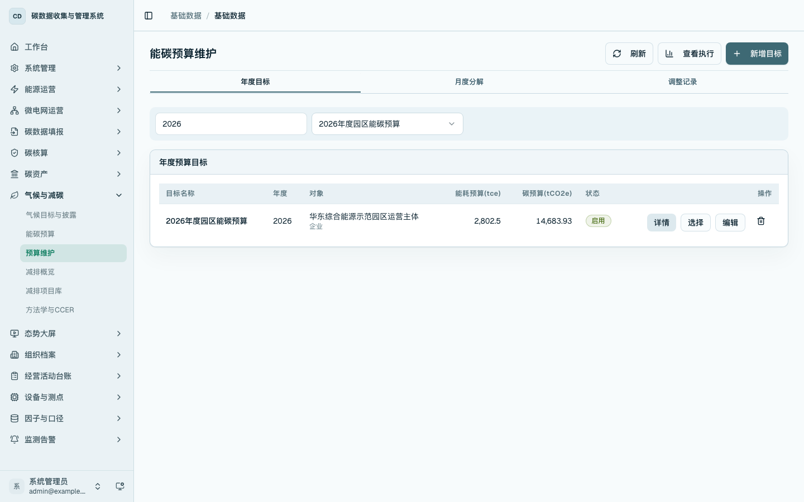
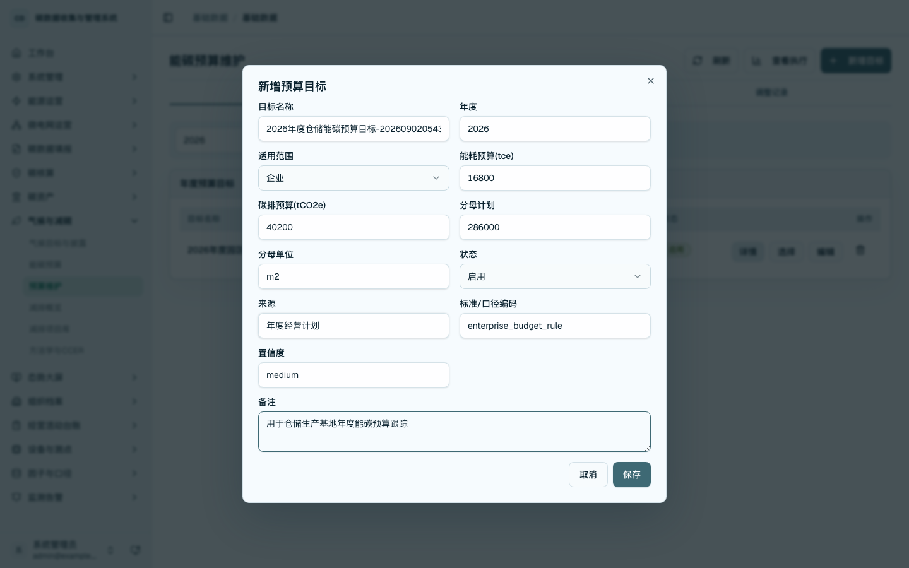
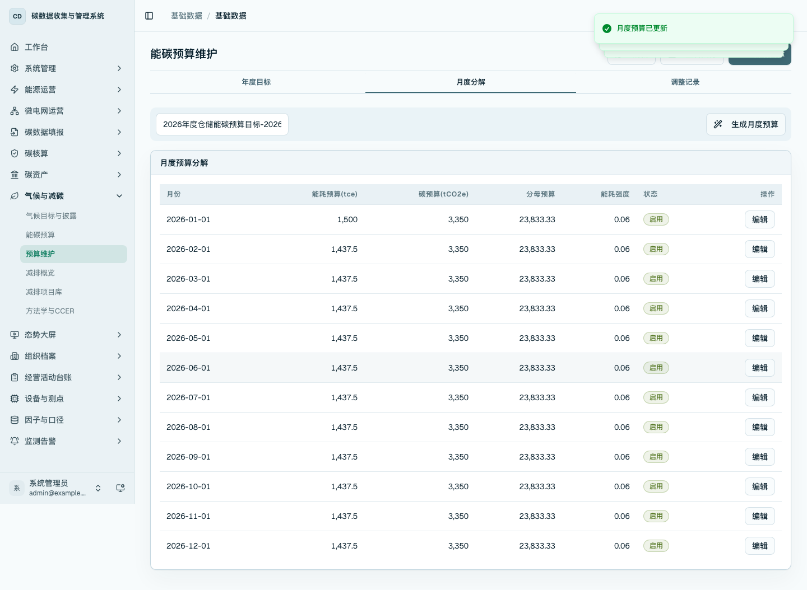
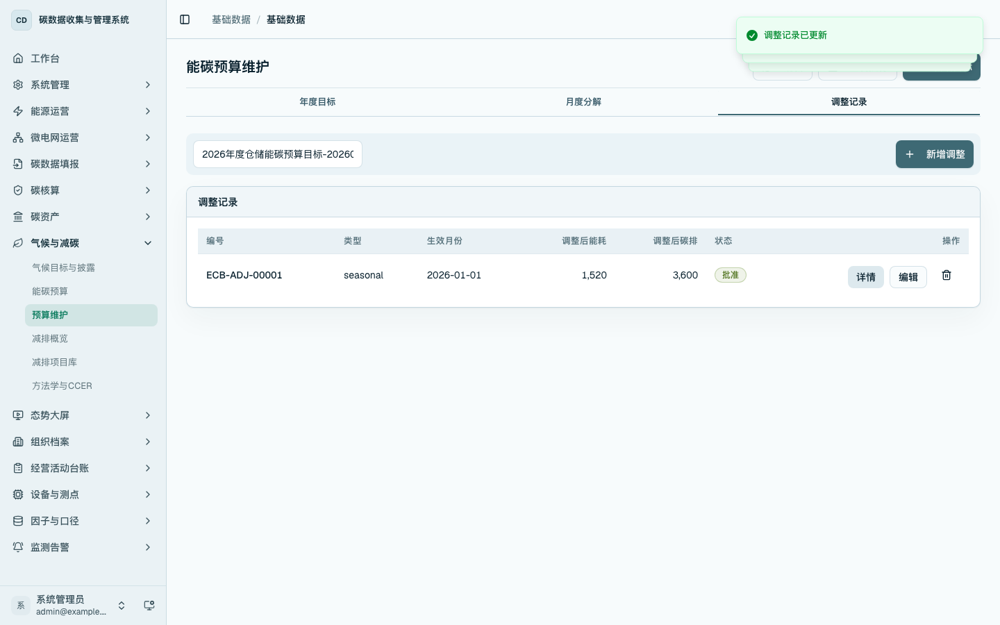
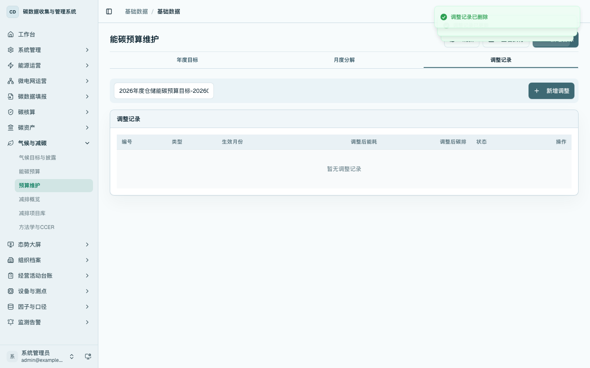
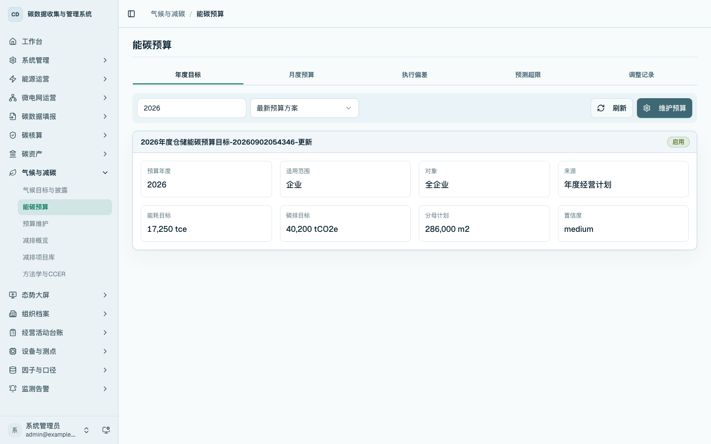

能碳预算维护
本章说明如何维护年度能碳预算目标、生成月度预算分解，并记录预算调整。预算维护用于形成预算口径和月度控制目标，预算分析页面用于查看执行进度、偏差和预测。
菜单位置
- 侧边栏：进入「气候与减碳 / 预算维护」，打开
/data/energy-budget。 - 数据管理入口页：进入
/platform的「能源运营」分组，点击「能碳预算维护」。 - 能碳预算分析页：在
/energy/budget点击「维护预算」进入维护页。
年度目标维护
进入 /data/energy-budget，在「年度目标」页签查看年度预算目标。可按年度筛选，列表展示预算对象、能耗预算、碳排预算和状态。

点击「新增目标」，维护目标名称、年度、适用范围、能耗预算、碳排预算、分母计划、分母单位、来源和备注。保存后，年度目标进入预算目标列表。

月度预算分解
切换到「月度分解」页签，点击「生成月度预算」，平台根据年度目标生成 12 个月的预算分解。用户可编辑单月能耗预算、碳排预算、分母预算、状态、来源和备注。

调整记录维护
切换到「调整记录」页签，点击「新增调整」。选择月份后，维护调整类型、调整后能耗、调整后碳排、申请人、批准人、状态和原因。保存后可继续编辑状态，用于记录预算调整过程。

对不再使用的调整记录，可在列表操作列点击删除。删除后列表实时刷新，当前年度目标下没有调整记录时显示空状态。

分析页入口
进入 /energy/budget 查看年度目标、月度预算、执行偏差、预测超限和调整记录。页面右上角提供「维护预算」入口，用户可从分析页面回到预算维护页。

操作要点
- 年度目标是预算管理的主记录，月度分解和调整记录均挂载在年度目标下。
- 月度预算由年度目标生成，生成后可按月修订。
- 调整记录用于记录预算调整原因和状态，不替代能源事实数据录入。
- 调整记录支持独立删除；年度目标删除时，其月度分解和调整记录同步清理。
- 预算执行查看在
/energy/budget完成，预算维护在/data/energy-budget完成。